A Simple Way to

Praise
P
Repent
R
Ask
A
Yield
Y
Tap a letter to explore
Prayer is how we talk to God. It is a place where God shapes the desires of our heart to what He desires. It's not a task to perform but a relationship to enjoy. A simple way to start is to use the acronym.
Sin to Confess
S
Promise to Claim
P
Example to Follow
E
Command to Obey
C
Service to Render
S
Tap a letter to explore
The Bible is how God talks to us. But what should we look for when He speaks? As you read Scripture, keep an eye out for five key things, summed up in SPECS. Most passages include at least one of them.